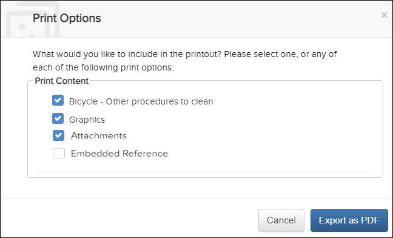
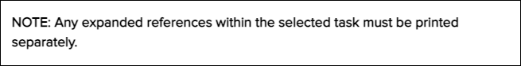
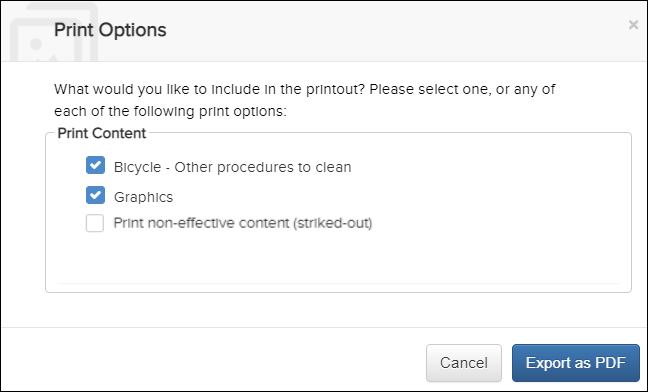
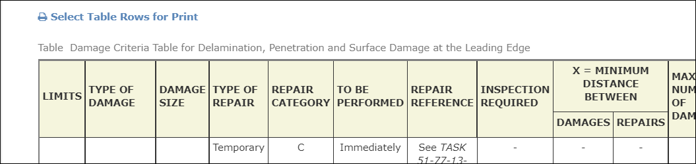
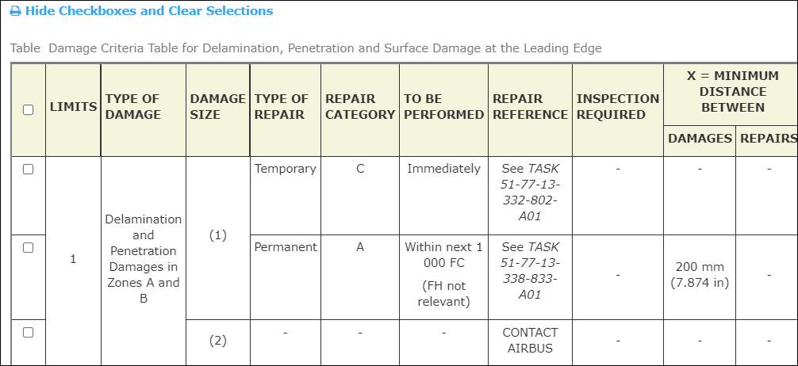
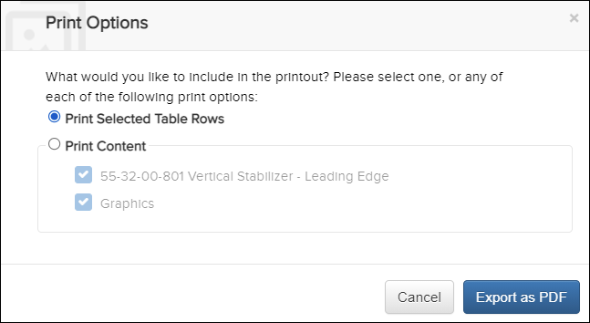
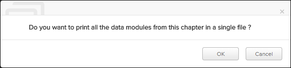
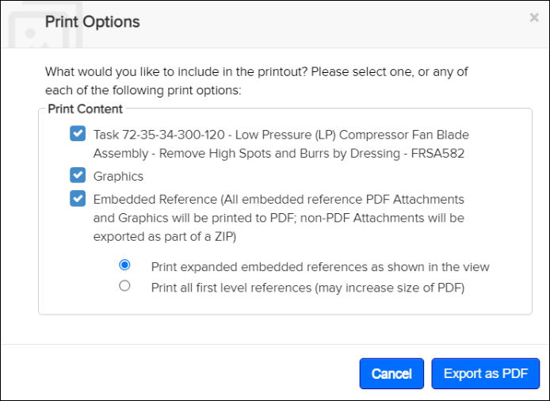
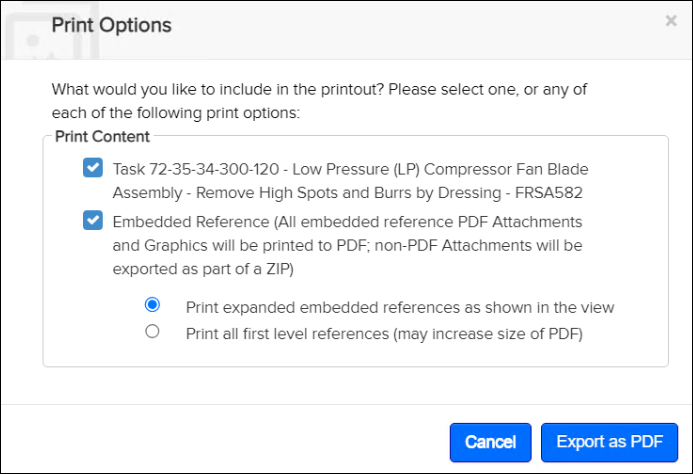
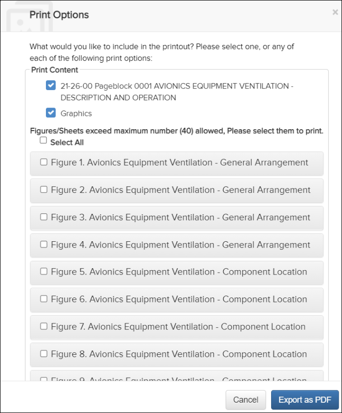

| Print Option | Result |
|---|---|
| <Document content> | Produces a PDF with the original content. Note: Embedded references,
indicated by
|
| Graphics | For DM/Task/Fragment that has graphics this option is present and
checked by default. It produces a PDF with the original content followed
by the graphics. Note: The current default configuration has a limit on
40 graphics per document in the print output. If the number of
graphics exceed this limit, you will be asked to reduce the number
of graphics in a selector window.
|
| Graphic Print Options (configuration) | Administrators, you can configure graphics print options to control
whether graphics print with the PDF or limit the number of graphics
available to select. Refer to the topic "Configuring the Print Options
for Graphics" in the Flatirons Pinpoint Configuration Guide for
details. The options available to users on the Print
Options dialog for printing graphics depend on the
configuration.
Note: If your administrator configured a graphic
print option, you must select the
Graphics checkbox, if available, when
printing graphics with the PDF.
Refer to the examples of
graphic print options below. |
| Attachments | For a DM/Task/Fragment that has attachments, this option is checked by default and will generate a PDF of the original content followed by the attachments. A list of the attachments are available at the beginning of the PDF. Unchecking the Attachment option will generate a PDF of the original content without attachments. |
| Embedded Reference | Activate this checkbox to display the print options for embedded references. |
| Embedded Reference: Print expanded embedded reference as shown in the view | (Default) Produces a PDF with original content and any expanded
references open in the publication.
|
| Embedded Reference: Print all first level references (may increase size of PDF) | Produces a PDF with original content and all embedded reference
links expanded to a single level.
|
| Print non-effective content (striked-out) | Activate this checkbox to include non-effective content when printing. The content appears as striked-out text in the PDF. |
| Print Selected Table Rows | This checkbox is activated by default when table rows are selected to print. |
Do these steps:
-
Click the
 Print icon in the Action Bar.
Note: The Print icon can be located in the
Print icon in the Action Bar.
Note: The Print icon can be located in the More drop-down menu if your page width is less than or
equal to 1280 pixels.
More drop-down menu if your page width is less than or
equal to 1280 pixels.The Print Options dialog appears:

Print Options Dialog
If your administrator has configured Embedded References to not print, that option is not available on the Print Options dialog. A message displays to print the embedded reference separately, for example:
Print Embedded References Separately Message
When effectivity is set, you can choose whether to hide or show non-effective content when printing. By default, the Print non-effective content (striked-out) checkbox is unchecked, and the non-effective content does not print. If you activate the checkbox, the non-effective content is included as striked-out text in the PDF.Note: This checkbox is not available on the Print Options dialog if effectivity is not set.
Print Options Dialog (Effectivity Set)
Administrators, this option is available by default when effectivity is set. You can enable/disable this option. Refer to "Enable/Disable Printing of Non-effective Content" in the Flatirons Pinpoint Configuration Guide.
When the Print Selected Row feature is enabled, you have the option of selecting rows to print from large tables. The Select Table Rows for Print option appears above the table. For example:
Select Table Rows
- Click . Checkboxes appear in front of each
row. For example:

Select Table Rows (Checkboxes)
- Select the rows you want to print. Click the checkbox in the table
header to select all rows.Note: You can select rows from multiple tables to print.Note: Select to hide the checkboxes and clear the ones selected.
- Click the
Print icon in the Action
Bar.
The Print Options dialog appears:

Print Options Dialog (Print Table Rows)
Note: If the content fails to download/export, a message "Document failed to export" displays.Administrators, the Print Selected Rows option is enabled by default for supported tables. You can enable/disable this option. Refer to "Enable/Disable Printable Table Row Feature" in the Flatirons Pinpoint Configuration Guide.
-
If the document is a CMM data publication, you can print all data
modules in a single PDF file. Select the top level element in the Table
of Content and click the button in the
Action Bar. You will get a dialog where you can
choose to print all data modules.

CMM Publication - Single PDF Print Option
- Click . Checkboxes appear in front of each
row. For example:
- Main document(s) PDFs, including graphics inline (if option is to show them inline)
- Attachments cover pages (with a column in the table indicating if the attachment is a supplement or an embedded reference)
- Supplements PDFs
- Embedded Reference PDFs, including graphics inline for each document (if option is to show them inline)
- All graphics (if option is to show them at the end of PDF)
Examples of Configured Print Options for Graphics
- Print all graphics.Select the Graphics checkbox to print all graphics with the PDF.

Print All Graphics
- Print no graphics.The Graphics checkbox is not available to select graphics to print with the PDF.

Print No Graphics
- Print <n> graphics.Note: The value of <n> can be any non-zero positive integer.Select the Graphics checkbox. If the number of graphics exceeds the configured number, a Select All checkbox is available and unchecked by default. When you select the checkbox, all graphics are selected and printed with the document. You can also select individual graphics.Note: The print request could fail if you select too many graphics, based on environment resources and graphic sizes. If printing all graphics fails, Flatirons Solutions recommends that you pick only a subset of the graphics.

Print (Select All)
There are configurations that your administrator can make to customize printing. Administrators, refer to Print Configurations